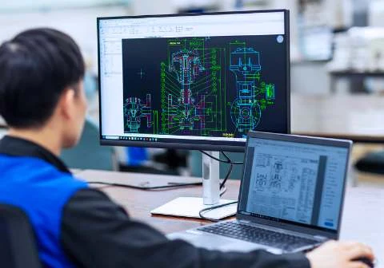
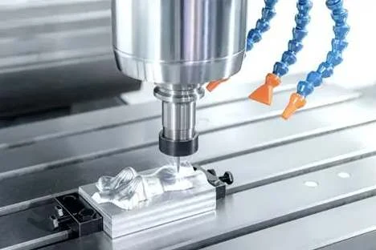
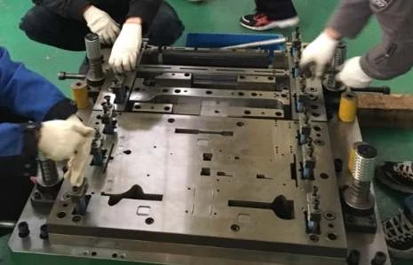
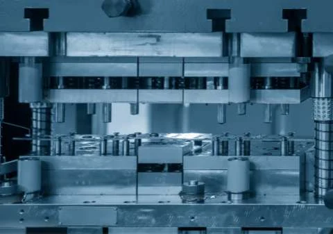
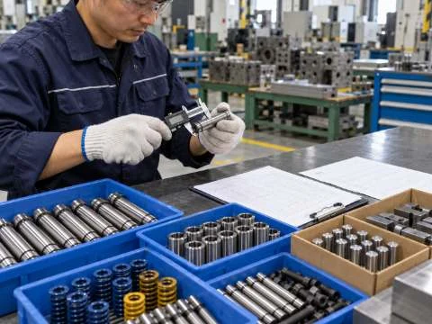

MANUFACTURING PROCESS
제작공정
HOME / 제작공정MANUFACTURING PROCESS
하나의 흐름으로 연결되는
금형 제작.
설계부터 가공·조립, 검사와 출하까지.
6단계 공정으로 금형 제작을 체계적으로 관리합니다.

01설계
설계 검토와 성형해석을 거쳐 금형 구조를 설계합니다.

02가공
원·부자재 수입검사 후 밀링, 래디얼, MCT, 연삭과 와이어 가공을 진행하고 공정검사를 합니다.

03금형 조립
가공한 부품을 조립하고, 조립 상태와 작동 조건을 검사합니다.

04TRY-OUT
프레스로 시험 타발하고 결과를 검사해 금형과 제품의 상태를 확인합니다.

05금형 승인·출하검사
금형 승인 절차를 거친 후 출하 전 최종 검사를 진행합니다.
- 06
포장·출하
검사를 마친 금형을 포장하고 출하합니다.